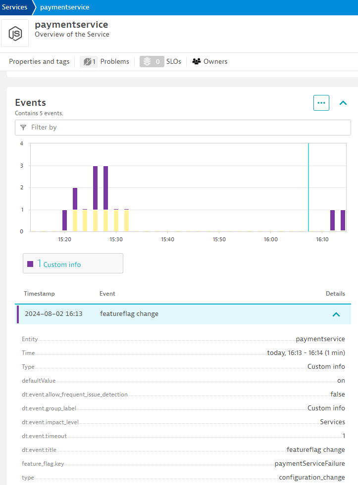

8. Make a Change
A product manager informs you that they're ready to release their new feature. They ask you to enable the feature and run the load test in a dev environment.
They tell you that the new feature is behind a flag called paymentServiceFailure (yes, an obvious name for this demo) and they tell you to change the defaultValue from off to on.
Update the Feature Flag and Inform Dynatrce#
Run the following script which:
- Notifies Dynatrace using a
CUSTOM_INFOevent of the change inc. the new value - Changes the
defaultValueof thepaymentServiceFailurefeature flag toon - Applies the configuration change
./runtimeChange.sh paymentServiceFailure on
Run Acceptance Load Test#
It is time to run an acceptance load test to see if the new feature has caused a regression.
This load test will run for 3 minutes and then trigger the site reliability guardian again:
kubectl apply -f .devcontainer/k6/k6-after-change.yaml
Configuration Change Events#
While you are waiting for the load test to complete, it is worth noting that each time a feature flag is changed, the runtimeChange.sh shell script sends an event to the service that is affected.
The feature flag changes the behaviour of the paymentservice (which the checkoutservice depends on).
Look at the paymentservice and notice the configuration changed events noted.
Dynatrace AI uses these events as part of the root cause analysis engine.
You can send event for anything you like: deployments, load tests, security scans, configuration changes and more.
